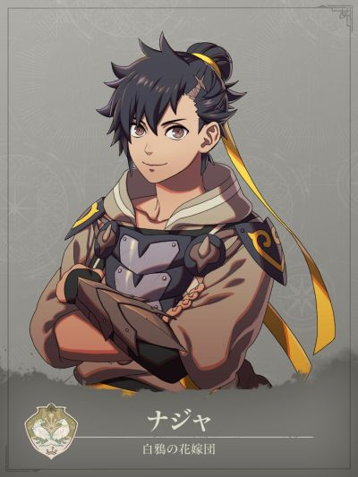

COMPANION DOSSIER
哪吒
ナジャ · 白鸦新娘团
检索别名：哪吒
喜欢什么，送什么
蔬菜、棋盘游戏
喜欢的东西：体力活动、正义、战斗、美食
查看送礼原文与例外 →第一部 · 各路线加入条件
- 凯伊线
- 3S / 6R ・砂虫肉 ×3
- 迪托利希线
- 3S / 10R ・砂虫肉 ×3
- 赛奥朵拉线
- 2S / 6R ・砂虫肉 ×3
- 蕾达线
- 3S / 9R ・砂虫肉 ×3
S = 支援等级 · R = 名声等级 · — = 无法招募
查看招募原文与附加说明 →交涉要准备什么
物品砂虫肉 ×3
日文「砂虫肉」。仍需满足对应路线支援、名声条件。 キラの村市集标价每个300G；库存及能否到达以本线当前进度为准。 海都アレクトー的ヴァンダル商会可用リガネット×10交换；砂虫战斗掉落和高級肉箱也可取得，但均为随机。 凯伊线可由该村「设施→市场」进入；已有本线6/18购入画面佐证，3份按画面标价共900G，实际价格和库存以当前存档为准。
适用：凯伊线 / 迪托利希线 / 赛奥朵拉线 / 蕾达线
- 凯伊线
- 南部「キラの村」→设施→市场。已核对的凯伊线购买画面中，砂虫肉每份300G、库存5份；所需3份按该标价共900G。实际价格与库存以当前存档为准。 海都アレクトー的ヴァンダル商会可用リガネット×10交换；砂虫战斗掉落和高級肉箱也可取得，但均为随机。
- 迪托利希线
- 日文「砂虫肉」。仍需满足对应路线支援、名声条件。 キラの村市集标价每个300G；库存及能否到达以本线当前进度为准。 海都アレクトー的ヴァンダル商会可用リガネット×10交换；砂虫战斗掉落和高級肉箱也可取得，但均为随机。
- 赛奥朵拉线
- 日文「砂虫肉」。仍需满足对应路线支援、名声条件。 キラの村市集标价每个300G；库存及能否到达以本线当前进度为准。 海都アレクトー的ヴァンダル商会可用リガネット×10交换；砂虫战斗掉落和高級肉箱也可取得，但均为随机。
- 蕾达线
- 日文「砂虫肉」。仍需满足对应路线支援、名声条件。 キラの村市集标价每个300G；库存及能否到达以本线当前进度为准。 海都アレクトー的ヴァンダル商会可用リガネット×10交换；砂虫战斗掉落和高級肉箱也可取得，但均为随机。
GameWith · 哪吒资料 ↗GameWith · 砂虫肉取得方式 ↗Game8 · 砂虫肉取得方式 ↗元プロゲーマーのゲーム記録 · カイ編 第1部7章～8章 ↗攻略来源交叉参考 · 未作游戏内实测
物品去哪里找
砂虫肉取得方式见上方交涉说明详见 GameWith ↗ Game8 ↗
怎么养，怎么转职
编辑培养建议
先攻剑系输出／拳套备选
- 前期
- 实际入队后优先剑术和可靠命中，沿现有斗士或剑客培养；已有合适职业时不必退回初级重练。个人「先手必胜」在先攻攻击时50%使攻击力+3，先按不触发也能完成的伤害安排收尾。剑术、格斗和步兵是擅长方向，没必要为兵种可用枪就额外补苦手枪术。
- 中期
- 省训练路线是剑客 → 侍道：剑C／B备考，持续投入一项武器。侍道持剑必杀+5、战技栏+2；剑客精通「技巧精湛」只在必杀时增伤，侍道精通「残心」还要求以必杀击倒敌人才能少量回血，两者都不能替代常规治疗。想改用拳套时再另练格斗走勇士，持拳套命中+5，精通「熟练之技」只给战技攻击命中+10。
- 后期目标
- 第三部完成マーズの依頼并确认考试开放后，可沿剑A转刀剑将领：持剑必杀+7、战技栏+3，精通流星为五次攻击，每次伤害50%。未开放就继续侍道。已投入格斗、需要拳套输出时可按格斗A选战斗将领，持拳套命中+7；临时改武器仍要另付训练和装备成本，不为收集职业把剑、斧、格斗同时练到A。
- 考试与解锁
- 剑客用中级票证，侍道／勇士用上级票证，刀剑将领／战斗将领用最上级票证；每次考试消耗一张。帝都售票员中级500G、上级3000G；第三部フィーナの漁村市场最上级8000G，另留补考与武器预算。技能Rank作为备考方向，开放、名声和当前合格率先看存档；不把推荐等级当必达转职等级。
- 取舍与限制
- Lv35学会并装备「俺は止まらねぇ+」后，仍须先触发「先手必胜」，随后攻击才有50%机会攻击力+5；两项增伤都不能计入保底击杀。承伤和魔防不是强项，出手后检查反击、敌方覆盖及治疗距离。迪线已有迪托利希、蕾达线已有穆承担近战时，先养现成主力；凯伊／赛线也只在缺剑手时追加这笔投入。
这些是阶段性培养方向，并非必须逐级转职的固定链。适用难度及版本未做独立实测；优先满足当前队伍缺口。
GameWith · 哪吒 ↗Game8 · 哪吒 ↗Altema · 哪吒 ↗HyperWiki · 哪吒 ↗Game8 · 剑客 ↗GameWith · 侍道 ↗Game8 · 侍道 ↗GameWith · 刀剑将领 ↗Game8 · 刀剑将领 ↗GameWith · 勇士 ↗Game8 · 勇士 ↗GameWith · 战斗将领 ↗Game8 · 战斗将领 ↗Game8 · 考试票证 ↗GameWith · 中级考试票证 ↗GameWith · 上级考试票证 ↗GameWith · 最上级考试票证 ↗GameCap · 第三部商店 ↗ちゅこ · 哪吒招募实录 ↗GameWith · 剑客 ↗攻略来源交叉参考 · 未作游戏内实测
本次新增条目经过来源页面核对，未逐项游戏内实测。没有补充明细的“交涉”仍待核验，不表示没有额外要求。